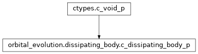

orbital_evolution.dissipating_body module¶
Class Inheritance Diagram¶
Define base class for all bodies participating in evolution calc.
-
class
orbital_evolution.dissipating_body.DissipatingBody[source]¶ Bases:
abc.ABCA base class for any body in a POET system.
-
configure(*, age, companion_mass, semimajor, eccentricity, spin_angmom, inclination, periapsis, locked_surface, zero_outer_inclination, zero_outer_periapsis)[source]¶ Tell the body what orbit it is in.
- Parameters
age – The age to set the body to.
companion_mass – The mass of the other body in the system.
semimajor – The semimajor axis of the orbit in solar radii.
eccentricity – The eccentricity of the orbit.
spin_angmom – The spin angular momenta of the non-locked zones of the body (outermost zone to innermost).
inclination – The inclinations of the zones of the body (same order as spin_angmom).
periapsis – The arguments of periapsis of the zones of the bodies (same order as spin_angmom).
locked_surface – If true, the outermost zone’s spin is assumed locked to a disk and spin_angmom is assumed to start from the next zone.
zero_outer_inclination – If true, the outermost zone’s inclination is assumed to be zero and the inclination argument is assumed to start from the next zone.
zero_outer_periapsis – If true, the outermost zone’s periapsis is assumed to be zero and the inclination argument is assumed to start from the next zone.
- Returns
None
-
-
class
orbital_evolution.dissipating_body.c_dissipating_body_p[source]¶ Bases:
ctypes.c_void_pDummy class only used for type checking.